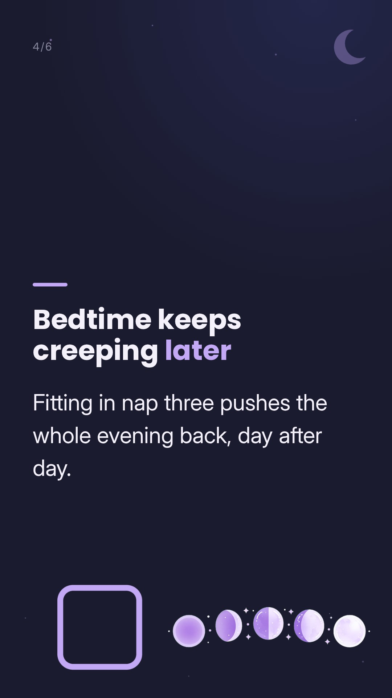

Caption
3 naps getting messy? Common signs of the move to 2. A third nap that turns into a battle, shorter naps, and a bedtime that keeps creeping later are signs many parents notice. Wake windows typically get longer as babies grow, from about 2-4 hours at 5-7 months to 2½-4½ hours at 7-10 months (Cleveland Clinic's typical ranges, not targets), so fitting in three naps can get harder. Every baby is different. Save this for later 🤍 Log naps in one tap to see the shift. Napapp, link in bio. Source: Cleveland Clinic. Not medical advice. Questions? Check with your pediatrician.
#napschedule #babysleep #wakewindows #newmom
Sound
Sound picks coming from Vira
Only use sounds cleared for business use: TikTok's Commercial sounds list, and on Instagram/Facebook a sound not flagged as unavailable for business accounts.
Happy with it? Go back to the calendar and tap Approve on this post.